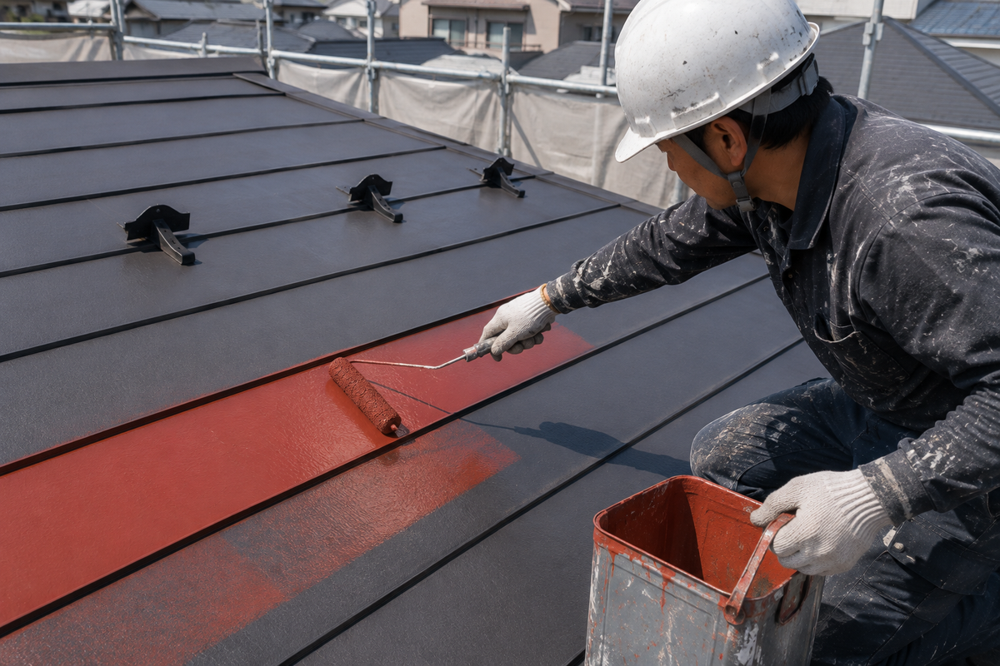
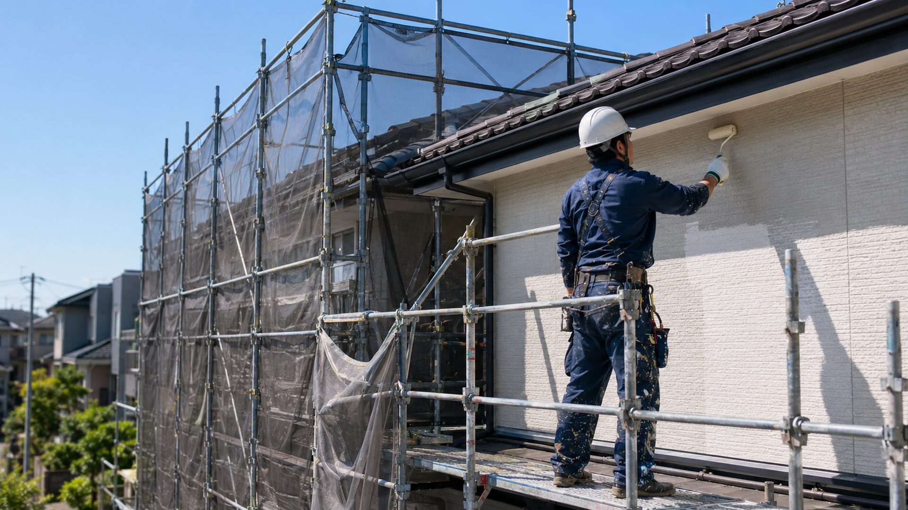
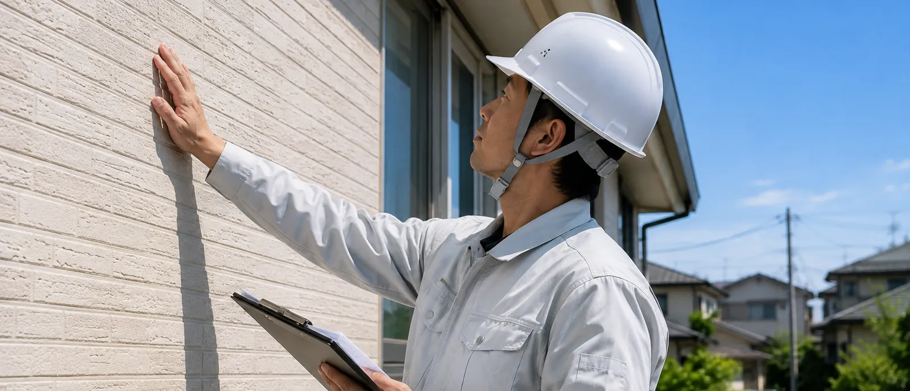
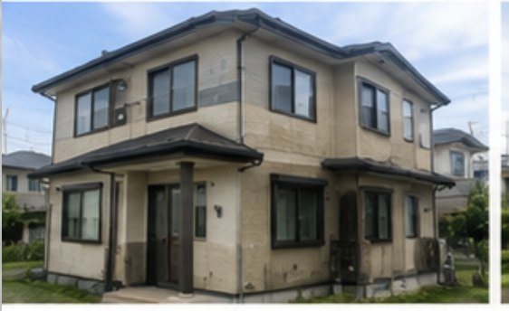
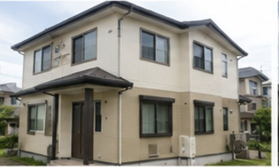
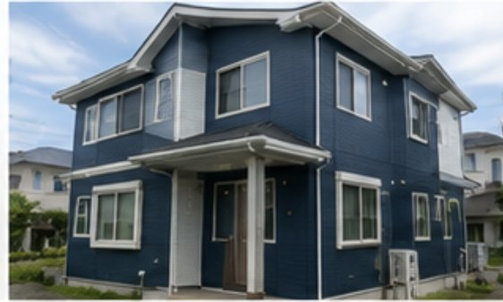

屋根塗装・錆止め
錆を落とし、下地を整えてから塗り重ねます。雪止めや棟板金の状態も併せて確認します。
- ケレン・錆止め
- 棟板金の点検
- 屋根葺き替えのご相談

住まいを明るく。暮らしを楽しく。
創業50年以上
見にも行かずに、見積りは書けません。
建物は必ず古くなります。美観と性能を保てるかどうかは、点検と手入れの積み重ね次第です。

屋根も外壁も、傷み方は一軒ずつ違います。だから見積りを書く前に、上って、触って、確かめる。ハヤシザキが50年変えていないのは、その順番です。
見るのは、営業ではなく職人です。一級建築塗装技能士の資格を持つ診断士が、屋根の錆も外壁のチョーキングも自分の目で見ます。写真を撮って持ち帰るだけの調査とは、判断の精度が違います。
要る工事と、要らない工事を分けます。いま直すべき箇所と、次回まで持たせられる箇所をはっきりお伝えします。見積書には工程・数量・使用塗料を明記。その場で契約をお願いすることはありません。
地元で、続けてきた会社です。札幌市工事指名業者、札幌塗装工業協同組合員。建設業許可 知事許可（般-30）石第23176号。工事が終わったあとも相談していただける体制を残しています。
ご相談から完工まで。工程を省かないことが、10年後の差になります。
ご相談から数日
ベテラン診断士がお伺いし、屋根・外壁・付帯部を調査します。所要は約1時間、費用はいただきません。
診断から約1週間
劣化の状況と、必要な工事・不要な工事をご説明。工程・数量・使用塗料を明記した見積書をお渡しします。
着工 1〜2日目
近隣にご挨拶のうえ足場を設置し、飛散防止シートを張ります。高圧洗浄で旧塗膜を落とし、しっかり乾かします。
3〜10日目
ケレン、ひび割れ補修、シーリング打ち替えのあと、下塗り・中塗り・上塗り。希釈率も塗布量も、決められたとおりに。
ここを二度で済ませる会社があります。塗膜の寿命は、だいたいここで決まります。最終日
お客様と一緒に仕上がりを確認し、手直しがあれば対応。清掃のうえお引き渡し、施工記録の写真もお渡しします。
※ 天候により工程が前後する場合があります。北海道では、おおむね4月〜11月が塗装に適した時期です。
札幌市とその近郊で施工した住宅の一例です。


「今と同じ雰囲気で」とのご希望でしたので、既存に近いクリーム系で塗り替えました。汚れの筋が出ていた北面は下塗りを一層足しています。


色を変えたいとのご相談でした。窓枠と玄関柱を白のまま残し、壁だけ濃紺に。目地は全周打ち替えています。


面ごとに色を変えたいとのご希望で、出隅を境に茶とベージュで塗り分けました。海に近く傷みが早い立地のため、外壁はフッ素系にしています。
工事が終わってから、いただいた言葉です。
「屋根の錆が気になって相談しました。全部やり替えるものだと思っていたら、まだ塗装で持ちますと説明していただいて。写真を見ながらの説明が分かりやすかったです。」札幌市北区 S様（60代・戸建て）
「見積書に工程と塗料の名前まで書いてあったので、他社と比べやすかった。職人さんが毎日きちんと挨拶してくれたのも安心でした。」札幌市東区 K様（50代・戸建て）
ここに載っていないことも、お電話でお答えします。
無料です。見積内容のご説明にお伺いし、ご検討のうえご判断ください。その場で契約はお願いしません。
手で触ると白い粉が付く、錆が出ている、目地が切れている、塗膜が膨れている。どれかが出ていれば点検の目安です。前回の塗装から10年前後でも一度ご相談ください。
塗料が乾く気温・湿度が要るため、おおむね4月〜11月が適期です。日程が埋まりやすいので早めのご相談を。
終日のご在宅は不要です。窓が開けられない日など、生活に影響する工程は前もってお伝えします。
塗装で対応できない傷みは、葺き替えを含めてご提案します。リフォーム全般もご相談ください。
現地調査・お見積りは無料です。お電話いただければ、見積りのご説明にお伺いします。
受付時間 8:30 - 18:00 ／ FAX 011-788-2097
お名前とご連絡先、気になっている場所をお書きください。
「どこが悪いのか分からない」で構いません。
写真を送っていただければ、それだけでも見当がつきます。